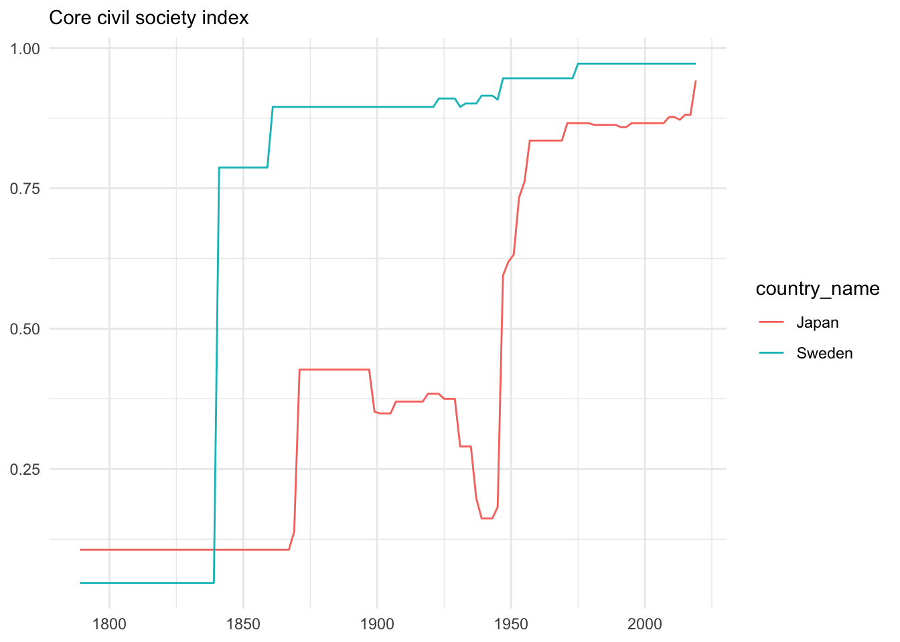
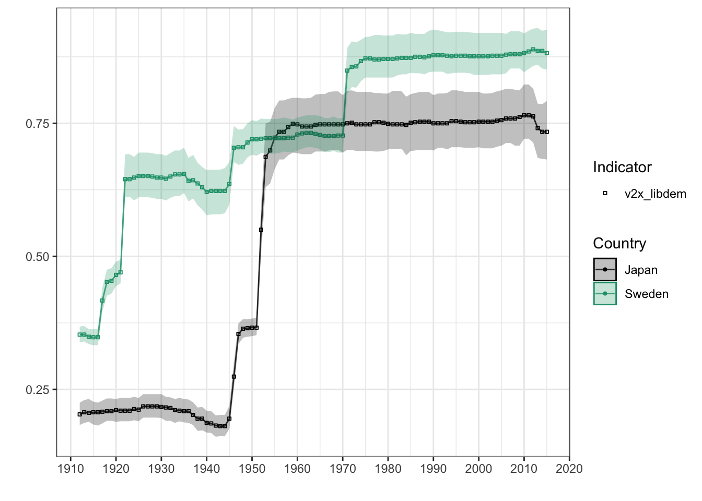
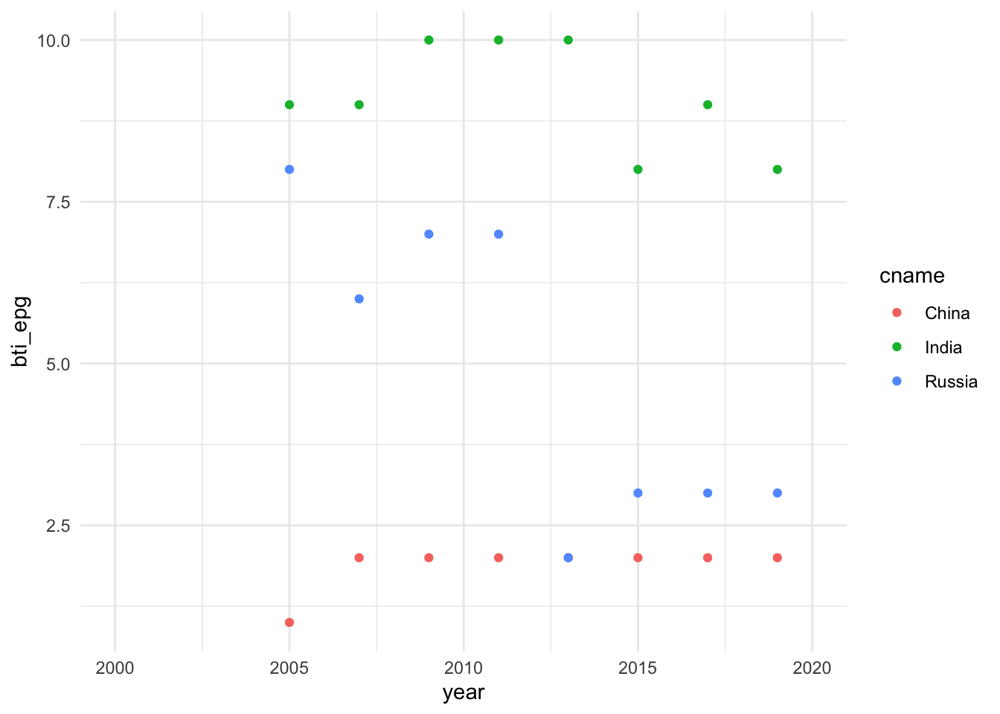

3 民主主義・国家データ
3.1 民主主義を測る- vdemdata
スウェーデンのイェーテボリ大学政治学科のV-Dem研究所のVarieties of Democracy(V-Dem)データベースは大規模な社会科学データベースです。データセットの最新バージョンv10は1789年から2019年までの202カ国をカバーしています。本データベースはその名が示すとおり、民主主義をめぐるデータセットを提供しています。アンケート調査にもとづいたミクロデータが基礎となっていますが、それらのデータから作成されたマクロデータが提供されています。
データはcsv, Stata,Spssの３つの形式で提供されています。また、本研究所じしんがデータセットRパッケージvdemdataを公開しています。これは最新のV-Dem (Varieties of Democracy) とV-partyのデータパッケージです。くわえて検索、グラフ作成機能も提供しています.
3.1.1 vdemdataパッケージのインストール
Rパッケージvdemdataパッケージは開発版であるため,vdemdataは同研究所のGithubサイトからインストールする必要があります。このため、最初に、devtoolsをインストールします。
install.packages("devtools")
library(devtools)次に、devtoolsを使ってvdemdataパッケージをインストールします。コンソール画面に次のように入力し、エンターキーを押してください。
devtools::install_github("vdeminstitute/vdemdata")インストールを終えたら、library()で読み込ます。これでvdemdataパッケージが利用できます。
library(vdemdata)本パッケージが提供する基本的な関数は以下のとおりです.使い方については後で説明します.
- vdem:データセットを読み込みます.
- vparty: V-Partyデータセットを読み込みます.
- var_info :コードブックで指定された特定の変数の基本情報をコンソールに表示します.
- find_var:キーワードで変数を検索します.
- fill_vars: 特定の選挙の変数をしまします.
グラフ作成機能も提供されています.
- plot_indicator: V-Dem指標のグラフを描きます.
3.1.2 vdemdataパッケージの利用法
3.1.2.1 データを読み込む - vdem
V-Demデータセットの読み込むためにはvdem関数を使います.ここでは読み込んだデータセットをv_dataという名前をつけたオブジェクトに容れます.
v_data <- vdemstr()関数を使ってデータ構造をみるとV-Demデータセットは非常に大きく、27,192の観察値、4,176の変数を持つことがわかります.ここからデータを探すことは大変です.最初に, vdemdataのcodebookを利用した方法を紹介しましょう.
str(v_data)## 'data.frame': 27192 obs. of 4176 variables:
## $ country_name : chr "Mexico" "Mexico" "Mexico" "Mexico" ...
## $ country_text_id : chr "MEX" "MEX" "MEX" "MEX" ...
## $ country_id : num 3 3 3 3 3 3 3 3 3 3 ...
## $ year : num 1789 1790 1791 1792 1793 ...
## $ historical_date : Date, format: "1789-12-31" ...
## $ project : num 1 1 1 1 1 1 1 1 1 1 ...
## $ historical : num 1 1 1 1 1 1 1 1 1 1 ...
## $ histname : chr "Viceroyalty of New Spain" "Viceroyalty of New Spain" "Viceroyalty of New Spain" "Viceroyalty of New Spain" ...
## $ codingstart : num 1789 1789 1789 1789 1789 ...
## $ codingend : num 2020 2020 2020 2020 2020 2020 2020 2020 2020 2020 ...
## $ codingstart_contemp : num 1900 1900 1900 1900 1900 1900 1900 1900 1900 1900 ...
## $ codingend_contemp : num 2020 2020 2020 2020 2020 2020 2020 2020 2020 2020 ...
## $ codingstart_hist : num 1789 1789 1789 1789 1789 ...
## $ codingend_hist : num 1920 1920 1920 1920 1920 1920 1920 1920 1920 1920 ...
## $ gapstart1 : num NA NA NA NA NA NA NA NA NA NA ...
## $ gapstart2 : num NA NA NA NA NA NA NA NA NA NA ...
## $ gapstart3 : num NA NA NA NA NA NA NA NA NA NA ...
## $ gapend1 : num NA NA NA NA NA NA NA NA NA NA ...
## $ gapend2 : num NA NA NA NA NA NA NA NA NA NA ...
## $ gapend3 : num NA NA NA NA NA NA NA NA NA NA ...
## $ gap_index : num 1 1 1 1 1 1 1 1 1 1 ...
## $ COWcode : num 70 70 70 70 70 70 70 70 70 70 ...
## $ v2x_polyarchy : num 0.026 0.026 0.026 0.026 0.026 0.026 0.026 0.026 0.026 0.026 ...
## $ v2x_polyarchy_codelow : num 0.016 0.016 0.016 0.016 0.016 0.016 0.016 0.016 0.016 0.016 ...
## $ v2x_polyarchy_codehigh : num 0.036 0.036 0.036 0.036 0.036 0.036 0.036 0.036 0.036 0.036 ...
## $ v2x_polyarchy_sd : num 0.01 0.01 0.01 0.01 0.01 0.01 0.01 0.01 0.01 0.01 ...
## $ v2x_libdem : num 0.041 0.041 0.041 0.041 0.041 0.041 0.041 0.041 0.041 0.041 ...
## $ v2x_libdem_codelow : num 0.025 0.025 0.025 0.025 0.025 0.025 0.025 0.025 0.025 0.025 ...
## $ v2x_libdem_codehigh : num 0.053 0.053 0.053 0.053 0.053 0.053 0.053 0.053 0.053 0.053 ...
## $ v2x_libdem_sd : num 0.014 0.014 0.014 0.014 0.014 0.014 0.014 0.014 0.014 0.014 ...
## $ v2x_partipdem : num 0.007 0.007 0.007 0.007 0.007 0.007 0.007 0.007 0.007 0.007 ...
## $ v2x_partipdem_codelow : num 0.001 0.001 0.001 0.001 0.001 0.001 0.001 0.001 0.001 0.001 ...
## $ v2x_partipdem_codehigh : num 0.011 0.011 0.011 0.011 0.011 0.011 0.011 0.011 0.011 0.011 ...
## $ v2x_partipdem_sd : num 0.007 0.007 0.007 0.007 0.007 0.007 0.007 0.007 0.007 0.007 ...
## $ v2x_delibdem : num NA NA NA NA NA NA NA NA NA NA ...
## $ v2x_delibdem_codelow : num NA NA NA NA NA NA NA NA NA NA ...
## $ v2x_delibdem_codehigh : num NA NA NA NA NA NA NA NA NA NA ...
## $ v2x_delibdem_sd : num NA NA NA NA NA NA NA NA NA NA ...
## $ v2x_egaldem : num NA NA NA NA NA NA NA NA NA NA ...
## $ v2x_egaldem_codelow : num NA NA NA NA NA NA NA NA NA NA ...
## $ v2x_egaldem_codehigh : num NA NA NA NA NA NA NA NA NA NA ...
## $ v2x_egaldem_sd : num NA NA NA NA NA NA NA NA NA NA ...
## $ v2x_api : num 0.053 0.053 0.053 0.053 0.053 0.053 0.053 0.053 0.053 0.053 ...
## $ v2x_api_codelow : num 0.033 0.033 0.033 0.033 0.033 0.033 0.033 0.033 0.033 0.033 ...
## $ v2x_api_codehigh : num 0.071 0.071 0.071 0.071 0.071 0.071 0.071 0.071 0.071 0.071 ...
## $ v2x_api_sd : num 0.021 0.021 0.021 0.021 0.021 0.021 0.021 0.021 0.021 0.021 ...
## $ v2x_mpi : num 0 0 0 0 0 0 0 0 0 0 ...
## $ v2x_mpi_codelow : num 0 0 0 0 0 0 0 0 0 0 ...
## $ v2x_mpi_codehigh : num 0 0 0 0 0 0 0 0 0 0 ...
## $ v2x_mpi_sd : num 0 0 0 0 0 0 0 0 0 0 ...
## $ v2x_freexp_altinf : num 0.161 0.161 0.161 0.161 0.161 0.161 0.161 0.161 0.161 0.161 ...
## $ v2x_freexp_altinf_codelow : num 0.093 0.093 0.093 0.093 0.093 0.093 0.093 0.093 0.093 0.093 ...
## $ v2x_freexp_altinf_codehigh : num 0.24 0.24 0.24 0.24 0.24 0.24 0.24 0.24 0.24 0.24 ...
## $ v2x_freexp_altinf_sd : num 0.621 0.621 0.621 0.621 0.621 0.621 0.621 0.621 0.621 0.621 ...
## $ v2x_frassoc_thick : num 0.04 0.04 0.04 0.04 0.04 0.04 0.04 0.04 0.04 0.04 ...
## $ v2x_frassoc_thick_codelow : num 0.019 0.019 0.019 0.019 0.019 0.019 0.019 0.019 0.019 0.019 ...
## $ v2x_frassoc_thick_codehigh : num 0.077 0.077 0.077 0.077 0.077 0.077 0.077 0.077 0.077 0.077 ...
## $ v2x_frassoc_thick_sd : num 0.628 0.628 0.628 0.628 0.628 0.628 0.628 0.628 0.628 0.628 ...
## $ v2x_suffr : num 0 0 0 0 0 0 0 0 0 0 ...
## $ v2xel_frefair : num 0 0 0 0 0 0 0 0 0 0 ...
## $ v2xel_frefair_codelow : num 0 0 0 0 0 0 0 0 0 0 ...
## $ v2xel_frefair_codehigh : num 0 0 0 0 0 0 0 0 0 0 ...
## $ v2xel_frefair_sd : num 0 0 0 0 0 0 0 0 0 0 ...
## $ v2x_elecoff : num 0 0 0 0 0 0 0 0 0 0 ...
## $ v2x_liberal : num 0.159 0.159 0.159 0.159 0.159 0.159 0.159 0.159 0.159 0.159 ...
## $ v2x_liberal_codelow : num 0.096 0.096 0.096 0.096 0.096 0.096 0.096 0.096 0.096 0.096 ...
## $ v2x_liberal_codehigh : num 0.208 0.208 0.208 0.208 0.208 0.208 0.208 0.208 0.208 0.208 ...
## $ v2x_liberal_sd : num 0.057 0.057 0.057 0.057 0.057 0.057 0.057 0.057 0.057 0.057 ...
## $ v2xcl_rol : num 0.189 0.189 0.189 0.189 0.189 0.189 0.189 0.189 0.189 0.189 ...
## $ v2xcl_rol_codelow : num 0.127 0.127 0.127 0.127 0.127 0.127 0.127 0.127 0.127 0.127 ...
## $ v2xcl_rol_codehigh : num 0.294 0.294 0.294 0.294 0.294 0.294 0.294 0.294 0.294 0.294 ...
## $ v2xcl_rol_sd : num 0.62 0.62 0.62 0.62 0.62 0.62 0.62 0.62 0.62 0.62 ...
## $ v2x_jucon : num 0.27 0.27 0.27 0.27 0.27 0.27 0.27 0.27 0.27 0.27 ...
## $ v2x_jucon_codelow : num 0.145 0.145 0.145 0.145 0.145 0.145 0.145 0.145 0.145 0.145 ...
## $ v2x_jucon_codehigh : num 0.451 0.451 0.451 0.451 0.451 0.451 0.451 0.451 0.451 0.451 ...
## $ v2x_jucon_sd : num 0.68 0.68 0.68 0.68 0.68 0.68 0.68 0.68 0.68 0.68 ...
## $ v2xlg_legcon : num 0.054 0.054 0.054 0.054 0.054 0.054 0.054 0.054 0.054 0.054 ...
## $ v2xlg_legcon_codelow : num 0.015 0.015 0.015 0.015 0.015 0.015 0.015 0.015 0.015 0.015 ...
## $ v2xlg_legcon_codehigh : num 0.178 0.178 0.178 0.178 0.178 0.178 0.178 0.178 0.178 0.178 ...
## $ v2xlg_legcon_sd : num 0.735 0.735 0.735 0.735 0.735 0.735 0.735 0.735 0.735 0.735 ...
## $ v2x_partip : num 0.024 0.024 0.024 0.024 0.024 0.024 0.024 0.024 0.024 0.024 ...
## $ v2x_partip_codelow : num 0.001 0.001 0.001 0.001 0.001 0.001 0.001 0.001 0.001 0.001 ...
## $ v2x_partip_codehigh : num 0.037 0.037 0.037 0.037 0.037 0.037 0.037 0.037 0.037 0.037 ...
## $ v2x_partip_sd : num 0.027 0.027 0.027 0.027 0.027 0.027 0.027 0.027 0.027 0.027 ...
## $ v2x_cspart : num 0.039 0.039 0.039 0.039 0.039 0.039 0.039 0.039 0.039 0.039 ...
## $ v2x_cspart_codelow : num 0.01 0.01 0.01 0.01 0.01 0.01 0.01 0.01 0.01 0.01 ...
## $ v2x_cspart_codehigh : num 0.113 0.113 0.113 0.113 0.113 0.113 0.113 0.113 0.113 0.113 ...
## $ v2x_cspart_sd : num 0.716 0.716 0.716 0.716 0.716 0.716 0.716 0.716 0.716 0.716 ...
## $ v2xdd_dd : num NA NA NA NA NA NA NA NA NA NA ...
## $ v2xel_locelec : num 0 0 0 0 0 0 0 0 0 0 ...
## $ v2xel_locelec_codelow : num 0 0 0 0 0 0 0 0 0 0 ...
## $ v2xel_locelec_codehigh : num 0 0 0 0 0 0 0 0 0 0 ...
## $ v2xel_locelec_sd : num 0 0 0 0 0 0 0 0 0 0 ...
## $ v2xel_regelec : num 0.013 0.013 0.013 0.013 0.013 0.013 0.013 0.013 0.013 0.013 ...
## $ v2xel_regelec_codelow : num 0 0 0 0 0 0 0 0 0 0 ...
## $ v2xel_regelec_codehigh : num 0.028 0.028 0.028 0.028 0.028 0.028 0.028 0.028 0.028 0.028 ...
## $ v2xel_regelec_sd : num 0.046 0.046 0.046 0.046 0.046 0.046 0.046 0.046 0.046 0.046 ...
## $ v2xdl_delib : num NA NA NA NA NA NA NA NA NA NA ...
## $ v2xdl_delib_codelow : num NA NA NA NA NA NA NA NA NA NA ...
## [list output truncated]データフレームv_dataは4,176の変数を有します.str(v_data)の表示から理解されるように、ほとんどの変数名がV-Dem特有の変数名です。たとえばv2x_polyarchyという変数がありますが、これが何を表現しているかは分かりません。そうした情報はcodebookから得られます.
Vdemdataには、変数の情報を提供する簡易版codebookがついています。codebookじたい1,017の観察値、17の変数から構成されるデータフレームです。View()関数を使ってデータフレームcodebookの変数名を一覧表示してみてください.
View(codebook)データフレームcodebookの変数tagの中にv2x_polyarchyがあります。これに対応する変数nameを見ると、Electoral democracy indexと記載されています.さらに変数quesitonをみると“To what extent is the ideal of electoral democracy in its fullest sense achieved?”という質問に対する回答をベースにしていることも分かります。
このように変数の意味を理解するためには、vdemdata付属のcodebookでも十分ですが、pdf版のフルバージョンもあります.
また変数の情報はvar_info()関数を使っても得ることができます.
var_info("変数タグtag名")“変数タグtag名”にはV-demデータセットの変数名もしくはcodebookのtag名を入力します.この例ではv2x_polyarchyです.
var_info("v2x_polyarchy")## $name
## [1] "Electoral democracy index"
##
## $vartype
## [1] "D"
##
## $tag
## [1] "v2x_polyarchy"
##
## $projectmanager
## [1] "Jan Teorell"
##
## $question
## [1] "To what extent is the ideal of electoral democracy in its fullest sense achieved?"
##
## $clarification
## [1] "The electoral principle of democracy seeks to embody the core value of making rulers responsive to citizens, achieved through electoral competition for the electorate's approval under circumstances when suffrage is extensive; political and civil society organizations can operate freely; elections are clean and not marred by fraud or systematic irregularities; and elections affect the composition of the chief executive of the country. In between elections, there is freedom of expression and an independent media capable of presenting alternative views on matters of political relevance. In the V-Dem conceptual scheme, electoral democracy is understood as an essential element of any other conception of representative democracy --- liberal, participatory, deliberative, egalitarian, or some other."
##
## $responses
## [1] NA
##
## $scale
## [1] "Interval, from low to high (0-1)."
##
## $sources
## [1] "v2x\\_freexp\\_altinf v2x\\_frassoc\\_thick v2x\\_suffr v2xel\\_frefair v2x\\_elecoff"
##
## $notes
## [1] NA
##
## $aggregation
## [1] "The index is formed by taking the average of, on the one hand, the weighted average of the indices measuring freedom of association thick (v2x_frassoc_thick), clean elections (v2xel_frefair), freedom of expression (v2x_freexp_altinf), elected officials (v2x_elecoff), and suffrage (v2x_suffr) and, on the other, the five-way multiplicative interaction between those indices. This is half way between a straight average and strict multiplication, meaning the average of the two. It is thus a compromise between the two most well known aggregation formulas in the literature, both allowing partial \"compensation\" in one sub-component for lack of polyarchy in the others, but also punishing countries not strong in one sub-component according to the \"weakest link\" argument. The aggregation is done at the level of Dahl's sub-components with the one exception of the non-electoral component. The index is aggregated using this formula: beginequation*beginalignedv2x_polyarchy = & .5 * MPI + .5 * API = .5 * (v2x_elecoff * v2xel_frefair * v2x_frassoc_thick * v2x_suffr * v2x_freexp_altinf) + .5 * ((1/8) * v2x_elecoff + (1/4) * v2xel_frefair + (1/4) * v2x_frassoc_thick + (1/8) * v2x_suffr + (1/4) * v2x_freexp_altinf)endalignedendequation*"
##
## $years
## [1] "1789-2019"
##
## $overlap_use_hist
## [1] FALSE
##
## $is_party
## [1] FALSE
##
## $cb_section_type
## [1] "subsubsection"
##
## $defaultdate
## [1] NA
##
## $source
## [1] "v2x_freexp_altinf v2x_frassoc_thick v2x_suffr v2xel_frefair v2x_elecoff"3.1.2.2 データを探す - find_var()
codebookをベースにデータを探す方法の他に、find_var()関数を利用した検索方法もあります.むしろ,この方法の方が便利です.find_()の使い方は次のようになります.
find_var("検索キーワード")たとえば「市民社会」”civil society”をキーワードにデータを探してみましょう.
find_var("civil society") %>%
str()## 'data.frame': 7 obs. of 17 variables:
## $ name : chr "Civil society participation index ordinal" "Women civil society participation index ordinal" "Core civil society index ordinal" "Civil society comments" ...
## $ vartype : chr "D" "D" "D" "C" ...
## $ tag : chr "e_v2x_cspart_3C, _4C, _5C" "e_v2x_gencs_3C, _4C, _5C" "e_v2xcs_ccsi_3C, _4C, _5C" "v2cscommnt" ...
## $ projectmanager : chr NA NA NA "Michael Bernhard, Michael Coppedge" ...
## $ question : chr "Are major CSOs routinely consulted by policymaker; how large is the involvement of people in CSOs; are women pr"| __truncated__ "Do women have the ability to express themselves and to form and participate in groups?" "How robust is civil society?" "Add here any comments you have about any of the previous questions on civil society. NOTE: Please do not includ"| __truncated__ ...
## $ clarification : chr "These are ordinalized versions of the V-Dem civil society participation index. The original index ranges from 0"| __truncated__ "These are ordinalized versions of the V-Dem women civil society participation index. The original index ranges "| __truncated__ "These are ordinalized versions of the V-Dem core civil society index. The original index ranges from 0 to 1. Th"| __truncated__ NA ...
## $ responses : chr NA NA NA "Text." ...
## $ scale : chr "Ordinal." "Ordinal." "Ordinal." NA ...
## $ sources : chr "v2pscnslnl v2cscnsult v2csprtcpt v2csgender" "v2cldiscw v2csgender v2mefemjrn" "v2cseeorgs v2csreprss v2csprtcpt" NA ...
## $ notes : chr NA NA NA NA ...
## $ aggregation : chr "Same transformation rule as for \"v2x_libdem_3C/_4C/_5C\"." "Same transformation rule as for \"v2x_libdem_3C/_4C/_5C\"." "Same transformation rule as for \"v2x_libdem_3C/_4C/_5C\"." NA ...
## $ years : chr NA NA NA NA ...
## $ overlap_use_hist: logi FALSE FALSE FALSE FALSE FALSE FALSE ...
## $ is_party : logi FALSE FALSE FALSE FALSE FALSE FALSE ...
## $ cb_section_type : chr "subsubsection" "subsubsection" "subsubsection" "subsubsection" ...
## $ defaultdate : chr NA NA NA NA ...
## $ source : chr "v2pscnslnl v2cscnsult v2csprtcpt v2csgender" "v2cldiscw v2csgender v2mefemjrn" "v2cseeorgs v2csreprss v2csprtcpt" NA ...ここでは”civil society”をキーワードに検索した結果をパイプ(%>%)でstr()関数に渡しています. 結果をみると、17行×17変数のデータフレームが得られます.1列めの変数が$name、2列目の変数が$vartype,３列目の変数が $tagと続きます.
少し見づらいのでView()関数を使い、同じ内容を表示させてみます.
find_var("civil society")
%>% View()name変数をみると、7行目に“Core civil society index”というデータがあることが分かります。じっさいにデータをダウンロードするためには変数tagの値が必要となります. この変数に対応するtag名はv2xcs_ccsi
です. また変数questionをみると、このデータが“How robust is civil society?”に対する回答にもとづいていることが分かります。さらに変数scaleからは０から1の値を取る間隔データでることも分かります。
それではこのCore civil society indexデータを取得してみましょう。じっさいにはvdemによってすでにV-demのデータセットをダウンロードしています。したがってこのデータセットを格納したデータフレームv_dataからCore civil society indexデータを抽出することになります. Core civil society index はv_dataではtag名すなわちv2xcs_ccsiで表現されています。そこで実際の作業としてはこの変数列を抽出することになります。変数列を選択し、抽出するためにはselect()関数を利用します. あわせて国名country_name、国コードcountry_text_id、年yearといった一連の変数も選択・抽出します.
civil_society <- v_data %>%
select("v2xcs_ccsi", "country_name", "country_text_id", "year")これでV-demの提供する市民社会指標core civil society indexが取得できました.つぎに市民社会指標の推移をグラフに描いてみましょう.
3.1.2.3 民主主義データの可視化
市民社会
さらにcountry_name変数を利用し、日本とスウェーデンだけを取り出してみましょう. このためにfilter()関数を利用します.
civil_society <- v_data %>%
select("v2xcs_ccsi", "country_name", "country_text_id", "year") %>%
filter(country_name == c("Japan","Sweden"))結果をhead() 関数で表示します.
head(civil_society)## v2xcs_ccsi country_name country_text_id year
## 1 0.047 Sweden SWE 1789
## 2 0.047 Sweden SWE 1791
## 3 0.047 Sweden SWE 1793
## 4 0.047 Sweden SWE 1795
## 5 0.047 Sweden SWE 1797
## 6 0.047 Sweden SWE 1799ggplot2を利用し、日本とスウェーデンの市民社会指標Core civil society indexの推移を比較してみましょう。
ggplot(data = civil_society, mapping = aes(x = year,y = v2xcs_ccsi,group = country_name))+
geom_line(mapping = aes(color = country_name))+
labs(
subtitle = "Core civil society index",
x = NULL,
y = NULL
)+
theme_minimal()
容易に想像がつくことですが、明治維新から第２次以前の期間においてはスウェーデンと日本は大きく異なっています.第２次世界大戦後にようやくスウェーデンに近づいていきます.
リベラル・デモクラシー
同じグラフはvdemdataパッケージのplot_indicator()関数でも描くことができます.plot_indicator()関数の基本的な使い方は次のようになります.
plot_indicator(
indicator = "",
countries = NULL,
min_year = min(vdemdata::vdem$year),
max_year = max(vdemdata::vdem$year),
uncertainty = TRUE
)plot_indicator()がとる５つの引数を説明しておきましょう.
- indicator = "“:”"にV-Demデータセットのtag名（文字列ベクトル）を入力します.tag名についてはcodebookを参照してください.
- countries= プロットされる国名（文字列ベクトル）を指定します. ただし、国名はV-Demデータの
country_name列の国だけが指定可能です. NULLの場合、グローバルな平均がプロットされます。 - min_year = プロットする期間の開始年(数値)を指定します. なお、min(vdemdata::vdem$year)は、min()関数を使ってvdemデータセットの年の最小値を返すよう指示することになります。
- max_year = プロットする期間の最終年(数値)を指定します.
- uncertainty = TRUEもしくはFALSEの論理値をとり、TRUEを指定したとき、利用可能な場合には信頼区間がポイント推定値に追加されます.
plot_indictor()によるグラフ作成ではリベラル・デモクラシー指標v2x_libdemを利用します.
plot_indicator(indicator= "v2x_libdem", countries = c("Japan", "Sweden"),min_year = 1912, max_year = 2015)
スェーデンと比較すると、第２次世界大戦以前の日本がいかにリベラル・デモクラシーからかけ離れていたか、また、1945年に劇的に政治体制が変化したか、ということを理解できます.
3.2 政府の質を測る - rgog
2004年にBo Rothstein教授とSören Holmberg教授によって設立されたQuality of Government(QoG)研究所は優れた政府Good Governanceと政府の質Quality of Governanceの原因、結果、性質に関するデータを提供しています.
QoG研究所が提供するデータセットは次の5つです.
- QoG基本データ(Basic Data)
- QoG標準データ(Standard Data)
- QoG OECDデータ(OECD Data)
- QoG 専門家サーベイ・データ(Expert Survey Data)
- QoG EU 地域データ(Eu Regional Data)
オープン政府データと関連トピックに関するRパッケージ開発者のコミュニティrOpengoveによって、QoGのデータを取得するためのRパッケージrqogが開発されています.rqogは、read_qog()関数によりBasic、Standard、OECDデータセットへのアクセスを提供しています.Standardデータには、Basicデータと同じ指標（367変数）に加え、約1600の指標が追加されています。Basicデータ、Standardデータともに、194の国がカバーされています.rqogは、デフォルトでは、大部分の指標と国の様々な期間の時系列を持つ縦断的データセットを利用します.
rqogはrOpengoveのGithubサイトからインストールします.
devtools::install_github("ropengov/rqog") # rqogのインストール
library(rqog) # rqogの呼び出しなお、devtoolsがインストールされていなければ、事前にインストールしておく必要があります.
install.packages("devtools")
library(devtools)3.2.1 データをダウンロードする - read_qog()
最初にQuality of Governmenデータの提供するQoG標準データ(Standard Data)をダウンロードしてみましょう.ダウンロードにはread_qog()関数を使います.ここでの例ではダウンロードしたデータをqog_dataと名前をつかたオブジェクトに容れます.
qog_data <- read_qog(which_data = "standard", data_type = "time-series")これを実行すると、15,825の観察値と1,864の変数から成るデータフレームが取得できます.read_qog()関数の使い方は以下のようになります.
read_qog(
which_data = "basic",
data_type = "time-series",
year = 2021,
data_dir = NULL,
file_format = "csv",
download_only = FALSE,
cache = TRUE,
update_cache = FALSEread_qog()関数は8つの引数をとります.
- which_data = : ダウンロードするQoGデータセットの名前を指定します. 現在利用可能なものは“basic”,“standard”,“oecd”,“social_policy”ですので、このいずれかを入力します.
- data_type = : QoGの時系列データセットかクロスセクションデータかを指定します.現在利用できるのは“cross-sectional”か“time-series”です.
- year = : データセットの年を指定します.yearはデータセットの公表年であり,特定のデータポイントの年ではありません.デフォルトは2019です.
- data_dir = : キャッシュディレクトリへのパスです.NULL(デフォルト)は’rqog’というディレクトリを作成し、利用します.
- file_format = :フィアルの形式を指定します.利用可能な形式は“csv”,“dta”,“sav”,“xlsx”です.
- download_only =TRUEもしくはFALSEを指定します.データセットのダウンロードと保存のみを行い、Rでのインポートを省略するかどうかを指定します.デフォルトはFALSEです.
- cache = : 論理値TRUEかFALSEによって,キャッシングを行うかどうかを指定します.デフォルトはTRUEです.
- update_cache = : 論理値TRUEかFALSEによって,キャッシュを更新するかどうかを指定します.デフォルトはFALSEです.
3.2.2 データを探す
特定の変数（データ）を探すには２つの方法があります.1つはcodebookを利用する方法、もう１つはrqog付属のmetaデータを利用する方法です.
3.2.2.1 Codebookを利用する
いささか面倒ですが、The QoG Instituteサイトに入り、 Data Downloadページに移り、たとえば標準データStandard Datasetの場合は、さらにGo to Standard Datasetへと移動し、そのページに掲載されているCodebookをクリックします。これでQoG Standard Dataset Codebook version Jan21がダウンロードできます.
codebookには2章において変数のリストList Variables by Categoriesが掲載されています.そこで変数の簡単な説明と変数名を得ることができます.たとえば、一番最初にAccountability sub-index (aii_acc)が掲載されていますが、変数名はaii_accであり、Accountability sub-indexがその説明です。より詳細な説明は該当するページに掲載されています.
例として中国、インドおよびロシアのEffective Power to Govern (bti_epg)をグラフにしてみましょう.すでにこの標準データセットはダンロードし、qog_dataというオブジェクトに容れてあります.したがって残る作業は次のようになります.
- このデータフレームからselect()関数を使ってグラフ化に必要な変数だけを取り出します.
- さらにfilter()関数を使って変数cnameのうち値（つまり行）が“China”,“India”,“Russia”のいずれかに等しい値（行）を取り出します.
- 次に, filter()関数を使ってこの指標の期間を1990年から2020年に指定します.
- 抽出結果をeconPowerというオブジェクトに容れます.
econPower <- qog_data %>%
select(year, cname,bti_epg) %>%
filter(cname %in% c("China","India","Russia"), year %in% 2000:2020)select()関数によって選択された変数year, cname,bti_eppの３変数です. cnameは国名の変数, bti_epgがEffective Power to Governです.
ggplot(data = econPower, mapping = aes(x = year, y= bti_epg))+
geom_point(aes(color = cname))+
theme_minimal()
3.2.2.2 metaデータ
ダウンロードして理解されるようにQoGデータは膨大なデータセットです.メタデータを使ってデータを探すこともできます.
rqogパッケージにはメタデータが同梱されています.各年（2016年～2020年）について基本データ(Basic Data), 標準データ(Standard Data) ,OECDデータ(OECD Data)のメタデータが提供されています.たとえば、
- meta_basic_cs_2016:基本データ（クロスセクショナル）の2016年のメタデータ
- meta_oecd_cs_2016 :OECDデータ（クロスセクショナル）の2016年のメタデータ
- meta_std_cs_2016 : 標準データ（クロスセクショナル）の2016年のメタデータ
どのメータも形式はデータフレームであり、次の４つの変数が与えられています.
- code : 指標コードです.
- name : 指標の名前です.
- value : ファクター指標の指標数値です.
- label : ファクター指標の値のラベルです.
- class : 指標のクラスです.つまり数値、ファクターもしくは文字です.
たとえばhead()関数を使ってmeta_basic_cs_2016の冒頭を表示してみましょう.
head(meta_basic_cs_2016)## # A tibble: 6 × 5
## code name value label class
## <chr> <chr> <dbl> <chr> <chr>
## 1 ccode Country Code Numeric NA <NA> numeric
## 2 cname Country Name NA <NA> character
## 3 ccodealp 3-letter Country Code NA <NA> character
## 4 ccodecow CCode NA <NA> numeric
## 5 ccodewb Country Code World Bank NA <NA> numeric
## 6 version Version of the Dataset NA <NA> character１列めはcode変数であり、この変数の中にはccode,canameといったデータがあります.2列めはname変数であり、Country Code Numeric,
Country Nameといったデータがあります.
3.3 政治体制を測る - democracyData
1997年に設立されたCenter for Systemic Peace (CSP)は世界の主要国（2014年は167カ国）の政治的行動を継続的に監視し、政治的暴力や「国家の失敗」の問題に関する新たな問題や持続的な状況について報告しています.その１つのプロジェクトにPolityプロジェクトがあります.Polityスキームは、当初、独裁的な政権が支配する世界において、独裁的な政権の権威のパターンから、より民主的な権威のパターンへの移行を追跡するために企画されました。
現在では、Pグローバル化時代の研究ニーズに応えるべく、PolityプロジェクトはPolity5フェーズへとアップグレードされています.Polity5プロジェクトは，比較,定量的な分析という目的のために国家の権威主義的特性をコード化するという当初のPolity研究の伝統を引き継ぎ、政治体制に関わる多くのデータ - 政治レジームの特徴やレジーム移行等に関するデータ-を提供しています.このデータにアクセスするためにdemocracyDataが開発されています.このパッケージを利用することによってCSPのPolity Vデータに簡単にアクセスできます.
# democracyDataのインストール
remotes::install_github("xmarquez/democracyData")
# democracyDataの呼び出し
library(democracyData)2020年に更新されたPolity 5データセットをダウンロードしてみましょう.ここではダウンロードした結果をpol_Vというオブジェクトに容れます.
pol_V <- download_polity_annual()これによって17,574行（観察値）と41列（変数）のデータセットがダウンロードできます.変数名だけ表示させてみましょう.
names(pol_V)democracyDataパッケージはPolity5だけえはなく、学術文献で使われている民主主義を測る多くのどのデータセットにアクセスするための関数を提供します。そうしたデータセットにはFreedom House, Geddes, Wright, and Frantz の autocratic regimes dataset, the Lexical Index of Electoral Democracy, DD/ACLP/PACL/CGV dataset等が含まれます.